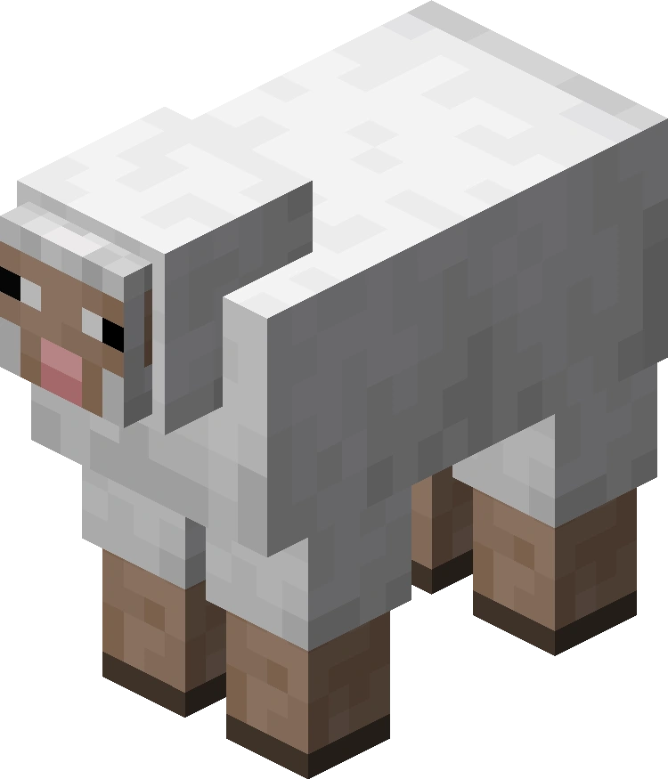
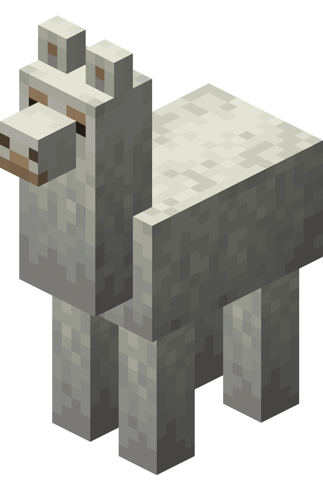
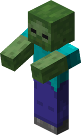
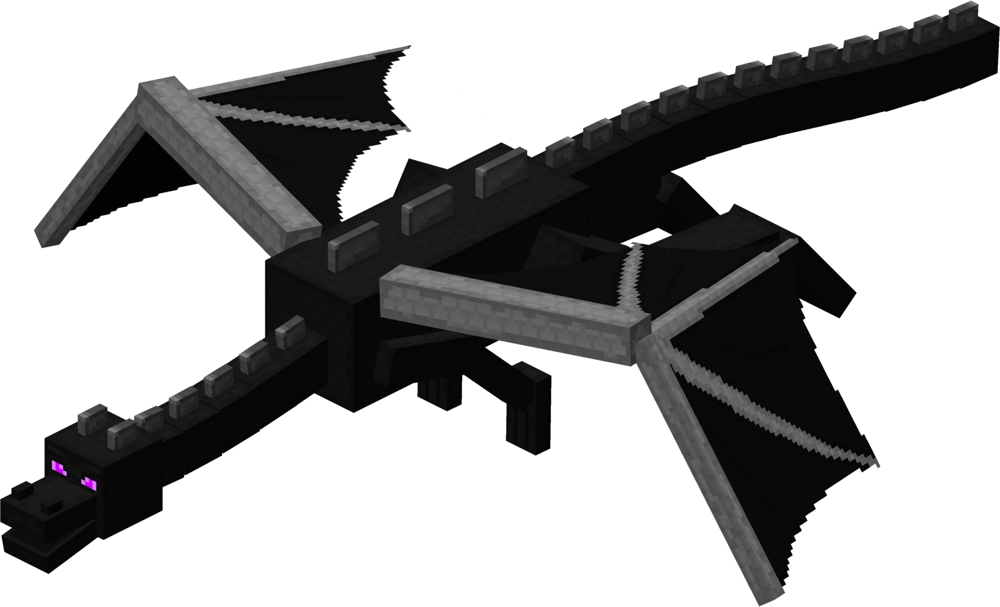

마인크래프트에서 몹(mob) 은 플레이어 이외의 생명체를 의미하며, 주로 동물이나 몬스터이다. 몹은 행동에 따라 비공격적, 중립적, 공격적, 보스 몹으로 분류된다. 보스 몹은 공격적 몹의 하나이다.




비공격적 몹은 플레이어를 적대하여 공격하는 경우가 없는 몹을 의미한다. 대부분의 동물과 아기 몬스터가 이애 해당한다. 중립적 몹은 평소에는 비공격적이나 특정 조건을 만족하면 공격적으로 변하는 몹이다. 일부 동물과 몬스터가 이에 해당한다. 공격적 몹은 플레이어를 적대하여 공격하는 몹이다. 대부분의 몬스터가 이에 해당한다.